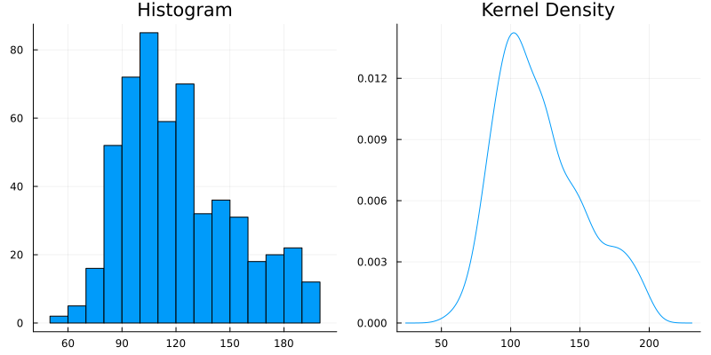
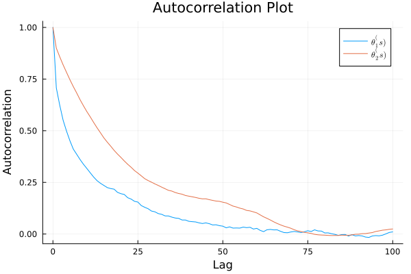
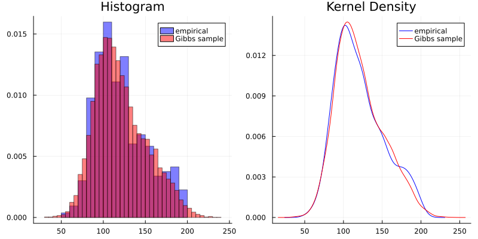

Exercise 6.2 Solution Example - Hoff, A First Course in Bayesian Statistical Methods
標準ベイズ統計学 演習問題 6.2 解答例
Table of Contents
- a)
- b)
- answer
- the full conditional distribution of \( (X_1, \dots, X_n)\)
- the full conditional distribution of \(p\)
- the full conditional distribution of \(\theta_1\)
- the full conditional distribution of \(\theta_2\)
- the full conditional distribution of \(\sigma_1^2\)
- the full conditional distribution of \(\sigma_2^2\)
- answer
- c)
- d)
a)
answer

上のヒストグラム及び kernel density のプロットは、左右非対称で右裾が長いという点で、正規分布の形から逸脱している。
The histogram and kernel density plot above deviate from the shape of a normal distribution in that they are asymmetric and right-skewed (have a long right tail).
b)
answer
The joint distribution can be written as follows.
\begin{equation} \label{eq:6.2b-2} \begin{aligned}[b] &p( Y_1, \dots, Y_n, X_1, \dots, X_n, p, \theta_1, \theta_2, \sigma_1^2, \sigma_2^2) \\ = &p( Y_1, \dots, Y_n | X_1, \dots, X_n, p, \theta_1, \theta_2, \sigma_1^2, \sigma_2^2) \\ &\quad \times p( X_1, \dots, X_n, p, \theta_1, \theta_2, \sigma_1^2, \sigma_2^2) \\ = &p( Y_1, \dots, Y_n | X_1, \dots, X_n, p, \theta_1, \theta_2, \sigma_1^2, \sigma_2^2) \\ &\quad \times p(X_1, \dots, X_n | p) p(p) p(\theta_1) p(\theta_2) p(\sigma_1^2) p(\sigma_2^2) \\ = & \prod_{i=1}^n p(Y_i | X_i, \theta_1, \theta_2, \sigma_1^2, \sigma_2^2) \\ &\quad \times \prod_{i=1}^n p(X_i | p) \times p(p) \times p(\theta_1) \times p(\theta_2) \times p(\sigma_1^2) \times p(\sigma_2^2) \\ = & \prod_{i; X_i = 1} p(Y_i | X_i=1, \theta_1, \sigma_1^2) \times \prod_{i; X_i = 2} p(Y_i | X_i=2, \theta_2, \sigma_2^2) \\ &\quad \times \prod_{i=1}^n p(X_i | p) \times p(p) \times p(\theta_1) \times p(\theta_2) \times p(\sigma_1^2) \times p(\sigma_2^2) \\ \end{aligned} \end{equation}Joint distribution for each \(i\) can be written as follows.
\begin{equation} \label{eq:6.2b-1} \begin{aligned}[b] & p( Y_i, X_i, p, \theta_1, \theta_2, \sigma_1^2, \sigma_2^2) \\ = &p( Y_i | X_i, p, \theta_1, \theta_2, \sigma_1^2, \sigma_2^2) p(X_i, p, \theta_1, \theta_2, \sigma_1^2, \sigma_2^2) \\ = &p( Y_i | X_i, p, \theta_1, \theta_2, \sigma_1^2, \sigma_2^2) p(X_i | p) p(p) p(\theta_1) p(\theta_2) p(\sigma_1^2) p(\sigma_2^2) \\ \end{aligned} \end{equation}the full conditional distribution of \( (X_1, \dots, X_n)\)
\begin{align*}
& p(X_i = 1 | Y_i, p, \theta_1, \theta_2, \sigma_1^2, \sigma_2^2) \\
= & \frac{p(Y_i, X_i = 1, p, \theta_1, \theta_2, \sigma_1^2, \sigma_2^2) }{p(Y_i, p, \theta_1, \theta_2, \sigma_1^2, \sigma_2^2)} \\
= & \frac{p(Y_i | X_i = 1, p, \theta_1, \theta_2, \sigma_1^2, \sigma_2^2) p(X_i = 1 | p)}{p(Y_i | X_i = 1, p, \theta_1, \theta_2, \sigma_1^2, \sigma_2^2) p(X_i = 1 | p) + p(Y_i | X_i = 2, p, \theta_1, \theta_2, \sigma_1^2, \sigma_2^2) p(X_i = 2 | p)} \\
= & \frac{p(Y_i| X_i = 1, \theta_1, \sigma_1^2) \times p}{p(Y_i| X_i = 1, \theta_1, \sigma_1^2) \times p + p(Y_i| X_i = 2, \theta_2, \sigma_2^2) \times (1 - p)} \\
= & \frac{ p \times \text{dnorm}(Y_i, \theta_1, \sigma_1) }{ p \times \text{dnorm}(Y_i, \theta_1, \sigma_1) + (1 - p) \times \text{dnorm}(Y_i, \theta_2, \sigma_2) } \\
\end{align*}
同様にして、
\begin{align*} & p(X_i = 2 | Y_i, p, \theta_1, \theta_2, \sigma_1^2, \sigma_2^2) \\ = & \frac{p \times \text{dnorm}(Y_i, \theta_2, \sigma_2) }{ p \times \text{dnorm}(Y_i, \theta_1, \sigma_1) + (1 - p) \times \text{dnorm}(Y_i, \theta_2, \sigma_2) } \\ \end{align*}従って、
\begin{align*} & p( X_1, \dots, X_n | Y_1, \dots, Y_n p, \theta_1, \theta_2, \sigma_1^2, \sigma_2^2) \\ = & \prod_{i=1}^n p( X_i | Y_i, \theta_1, \theta_2, \sigma_1^2) \\ = & \prod_{i, X_i = 1} p(X_i = 1 | Y_i, p, \theta_1, \theta_2, \sigma_1^2, \sigma_2^2) \times \prod_{i, X_i = 2} p(X_i = 2 | Y_i, p, \theta_1, \theta_2, \sigma_1^2, \sigma_2^2) \\ = & \prod_{i, X_i = 1} \frac{ p \times \text{dnorm}(Y_i, \theta_1, \sigma_1) }{ p \times \text{dnorm}(Y_i, \theta_1, \sigma_1) + (1 - p) \times \text{dnorm}(Y_i, \theta_2, \sigma_2) } \\ & \quad\times \prod_{i, X_i = 2} \frac{p \times \text{dnorm}(Y_i, \theta_2, \sigma_2) }{ p \times \text{dnorm}(Y_i, \theta_1, \sigma_1) + (1 - p) \times \text{dnorm}(Y_i, \theta_2, \sigma_2) } \\ \end{align*}the full conditional distribution of \(p\)
\begin{align*}
& p(p | Y_1, \dots, Y_n, X_1, \dots, X_n, \theta_1, \theta_2, \sigma_1^2, \sigma_2^2) \\
\propto & p( Y_1, \dots, Y_n, X_1, \dots, X_n, p, \theta_1, \theta_2, \sigma_1^2,
\sigma_2^2) \\
\propto & \prod_{i=1}^n p(X_i | p) \times p(p)
\quad (\because \eqref{eq:6.2b-2}) \\
\propto & p^{\sum (2 - X_i)} (1 - p)^{\sum (X_i - 1)} \times p^{a - 1} (1 - p)^{b - 1} \\
\propto & p^{\sum (2 - X_i) + a - 1} (1 - p)^{\sum (X_i - 1) + b -1} \\
\propto & \text{dbeta}(p, \sum (2 - X_i) + a, \sum (X_i - 1) + b) \\
\end{align*}
the full conditional distribution of \(\theta_1\)
\begin{align*}
& p(\theta_1 | Y_1, \dots, Y_n, X_1, \dots, X_n, p, \theta_2, \sigma_1^2, \sigma_2^2) \\
\propto & p( Y_1, \dots, Y_n, X_1, \dots, X_n, p, \theta_1, \theta_2, \sigma_1^2, \sigma_2^2) \\
\propto & \prod_{i; X_i = 1} p(Y_i | X_i =1, \theta_1,
\sigma_1^2)
\times p(\theta_1)
\quad (\because \eqref{eq:6.2b-2}) \\
\propto & \prod_{i; X_i = 1} \exp \left\{ - \frac{1}{2 \sigma_1^2} \left( Y_i - \theta_1 \right)^2 \right\}
\times \exp \left\{ - \frac{1}{2 \tau_0^2} \left( \theta_1 - \mu_0 \right)^2 \right\} \\
= & \exp \left\{ - \frac{1}{2 \sigma_1^2} \sum_{i; X_i = 1} \left( Y_i - \theta_1 \right)^2 \right\}
\times \exp \left\{ - \frac{1}{2 \tau_0^2} \left( \theta_1 - \mu_0 \right)^2 \right\} \\
\propto & \text{dnormal}(\theta_1, \mu_1, \tau_1),
\quad \text{ where } \\
& \mu_1 = \frac{\frac{1}{\tau_0^2} \mu_0 + \frac{n_1}{\sigma_1^2} \bar{Y}_1}{\frac{1}{\tau_0^2} + \frac{n_1}{\sigma_1^2}},
\quad \tau_1^2 = \left( \frac{1}{\tau_0^2} + \frac{n_1}{\sigma_1^2} \right)^{-1} \\
\end{align*}
なお、最後の式変形は教科書 p.70 を参照。
the full conditional distribution of \(\theta_2\)
\(\theta_2\)についても同様に計算すると、
\begin{align*} & p(\theta_2 | Y_1, \dots, Y_n, X_1, \dots, X_n, p, \theta_1, \sigma_1^2, \sigma_2^2) \\ \propto & \text{dnormal}(\theta_2, \mu_2, \tau_2), \quad \text{ where } \\ & \mu_2 = \frac{\frac{1}{\tau_0^2} \mu_0 + \frac{n_2}{\sigma_2^2} \bar{Y}_2}{\frac{1}{\tau_0^2} + \frac{n_2}{\sigma_2^2}}, \quad \tau_2^2 = \left( \frac{1}{\tau_0^2} + \frac{n_2}{\sigma_2^2} \right)^{-1} \\ \end{align*}the full conditional distribution of \(\sigma_1^2\)
\begin{align*}
& p(\sigma_1^2 | Y_1, \dots, Y_n, X_1, \dots, X_n, p, \theta_1, \theta_2, \sigma_2^2) \\
\propto & p( Y_1, \dots, Y_n, X_1, \dots, X_n, p, \theta_1, \theta_2, \sigma_1^2, \sigma_2^2) \\
\propto & \prod_{i; X_i = 1} p(Y_i | X_i =1, \theta_1, \sigma_1^2) \times p(\sigma_1^2)
\quad (\because \eqref{eq:6.2b-2}) \\
\propto & \prod_{i; X_i = 1} (\sigma_1^2)^{ - \frac{1}{2} } \exp \left\{ - \frac{1}{2 \sigma_1^2} \left( Y_i - \theta_1 \right)^2 \right\}
\times \sigma_1^{- ( \frac{\nu_0}{2} + 1 )} \exp \left\{ - \frac{\nu_0 \sigma_0^2}{2 \sigma_1^2} \right\} \\
\propto & (\sigma_1^2)^{- ( \frac{\nu_0 + n_1}{2} + 1 )} \exp \left\{ - \frac{1}{2 \sigma_1^2} \left( \nu_0 \sigma_0^2 + \sum_{i; X_i = 1} \left( Y_i - \theta_1 \right)^2 \right) \right\} \\
\propto & \text{dinverse-gamma}(\sigma_1^2, \frac{\nu_1}{2}, \frac{\nu_1 \sigma_1^2(\theta_1)}{2}),
\quad \text{ where } \\
& \nu_1 = \nu_0 + n_1, \\
& \sigma_1^2(\theta_1) = \frac{1}{\nu_1} [ \nu_0 \sigma_0^2 + n_1 s_1^2(\theta_1) ] \\
\end{align*}
the full conditional distribution of \(\sigma_2^2\)
\(\sigma_2^2\)についても同様に計算すると、
\begin{align*} & p(\sigma_2^2 | Y_1, \dots, Y_n, X_1, \dots, X_n, p, \theta_1, \theta_2, \sigma_1^2) \\ \propto & \text{dinverse-gamma}(\sigma_2^2, \frac{\nu_2}{2}, \frac{\nu_2 \sigma_2^2(\theta_2)}{2}), \quad \text{ where } \\ & \nu_2 = \nu_0 + n_2, \\ & \sigma_2^2(\theta_2) = \frac{1}{\nu_2} [ \nu_0 \sigma_0^2 + n_2 s_2^2(\theta_2) ] \\ \end{align*}c)
Answer
a = b = 1 μ₀ = 120 τ₀² = 200 σ₀² = 1000 ν₀ = 10 S = 10000 # %% function rand_X(y, p, θ₁, θ₂, σ₁², σ₂²) # probability of Xi = 1 function bin_prob(yi, p, θ₁, θ₂, σ₁², σ₂²) p1 = p * pdf(Normal(θ₁, sqrt(σ₁²)), yi) p2 = (1 - p) * pdf(Normal(θ₂, sqrt(σ₂²)), yi) prob = p1/(p1 + p2) end n = length(y) X = Vector{Float64}(undef, n) for i in 1:n X[i] = 2 - rand(Bernoulli(bin_prob(y[i], p, θ₁, θ₂, σ₁², σ₂²))) end return X end # %% function rand_p(X, a, b) n1 = sum(X .== 1) n2 = sum(X .== 2) return rand(Beta(a + n1, b + n2)) end # %% function rand_θ(μ₀, τ₀², σ², y) n = length(y) ȳ = mean(y) μn = (μ₀/τ₀² + ȳ * n/σ²) / (1/τ₀² + n/σ²) τn² = 1/(1/τ₀² + n/σ²) return rand(Normal(μn, sqrt(τn²))) end # %% function rand_σ²(θ, ν₀, σ₀², y) n = length(y) ȳ = mean(y) s² = var(y) ns² = (n-1) * s² + n * (ȳ - θ)^2 νn = ν₀ + n σn² = (ν₀ * σ₀² + ns²)/νn α = νn/2 β = νn * σn²/2 return 1/rand(Gamma(α, 1/β)) end # %% mean_y = mean(data) var_y = var(data) # %% # Gibbs Sampler THETA = Matrix{Float64}(undef, S, 2) SIGMA = Matrix{Float64}(undef, S, 2) P = [] X_MC = Matrix{Int}(undef, S, length(data)) # starting values θ₁ = θ₂ = mean_y σ₁² = σ₂² = var_y p = 0.5 for s in 1:S X_MC[s, :] = rand_X(data, p, θ₁, θ₂, σ₁², σ₂²) p = rand_p(X_MC[s, :], a, b) θ₁ = rand_θ(μ₀, τ₀², σ₁², data[X_MC[s, :] .== 1]) θ₂ = rand_θ(μ₀, τ₀², σ₂², data[X_MC[s, :] .== 2]) σ₁² = rand_σ²(θ₁, ν₀, σ₀², data[X_MC[s, :] .== 1]) σ₂² = rand_σ²(θ₂, ν₀, σ₀², data[X_MC[s, :] .== 2]) THETA[s, :] = [θ₁, θ₂] SIGMA[s, :] = [σ₁², σ₂²] push!(P, p) if s % 1000 == 0 println("Iteration: $s done") end end # %% # get smaller one for each row THETA1 = mapslices(minimum, THETA, dims = 2) THETA2 = mapslices(maximum, THETA, dims = 2) # %% # autocorrelation plot lags = 0:100 fig = plot( lags, autocor(THETA1, lags), label = L"\theta_1^(s)", xlabel = "Lag", ylabel = "Autocorrelation", title = "Autocorrelation Plot" ) fig = plot!( lags, autocor(THETA2, lags), label = L"\theta_2^(s)", ) fig

ess(Chains([THETA1 THETA2]))
ESS
parameters ess rhat
Symbol Float64 Float64
param_1 464.2489 1.0002
param_2 238.5754 1.0000
d)
Answer
# sample y function function rand_y(p, θ₁, θ₂, σ₁², σ₂²) x = 2 - rand(Bernoulli(p)) if x == 1 return rand(Normal(θ₁, sqrt(σ₁²))) else return rand(Normal(θ₂, sqrt(σ₂²))) end end # %% # Gibbs Sampler THETA = Matrix{Float64}(undef, S, 2) SIGMA = Matrix{Float64}(undef, S, 2) P = [] X_MC = Matrix{Int}(undef, S, length(data)) Y = [] # starting values θ₁ = θ₂ = mean_y σ₁² = σ₂² = var_y p = 0.5 for s in 1:S X_MC[s, :] = rand_X(data, p, θ₁, θ₂, σ₁², σ₂²) if s % 1000 == 0 println("Iteration: $s") tmp = X_MC[s, :] println(sum(tmp .== 1),", ", sum(tmp .== 2)) end p = rand_p(X_MC[s, :], a, b) θ₁ = rand_θ(μ₀, τ₀², σ₁², data[X_MC[s, :] .== 1]) θ₂ = rand_θ(μ₀, τ₀², σ₂², data[X_MC[s, :] .== 2]) σ₁² = rand_σ²(θ₁, ν₀, σ₀², data[X_MC[s, :] .== 1]) σ₂² = rand_σ²(θ₂, ν₀, σ₀², data[X_MC[s, :] .== 2]) THETA[s, :] = [θ₁, θ₂] SIGMA[s, :] = [σ₁², σ₂²] push!(P, p) # sample y y = rand_y(p, θ₁, θ₂, σ₁², σ₂²) push!(Y, y) end

このモデルは、データの分布を割とうまく近似できてるんちゃうん。 (I think this model can approximate the data distribution well.)